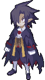
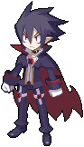
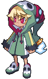
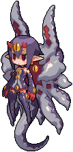
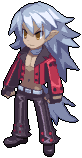
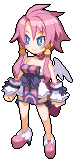

-
Valvatorez Tyrant
Um vampiro que é conhecido como "rei da carnificina e da atrocidade" e "Valvatorez do mal absoluto manchado em sangue. Ele é um demónio lendário, sendo um heói para diversos demónios.
-
Valvatorez Prinny instructor
Um demónio orgulhosso e um instrutor de prinnys. Ele teve que perder todos os seus poderes para manter uma promessa.
-
Fuka Prinny
Uma prinny que possui o seu corpo humano pela falta de pelo de prinny na prisão do submundo Hades.
-
Emizel Shinigami
O filho do presidente do submundo Hugo. Por causa dele ser muito mimado por seu pai ele se acha superior a todos ,porém, ao perceber uqe seu pai não o resgataria ele decide se tornar um demónio que seu pai teria orgulho.
-
Desco Supossed final boss
Um demónio artificial criada pelo pai de Fuka Genjuro para ser sua irmãzinha. Ela ama muito Fuka e quer se tornar uma chefe final para assim poder ajudar sua irmã mais velha a dominar o mundo.
-
Fenrich Steward
Um wherewolf que é muito fiel a Valvatorez. Ele fará de tudo para seu lorde tomar sangue humano e recuperar a sua glória até mesmo fingir sua morte.
-
Artina Angel of avarice
Um anjo que é o amor de Valvatorez. Quando ela era humana, ela era uma freira que vivia uma vida boémia para poder comprar remédios para seus pacientes.